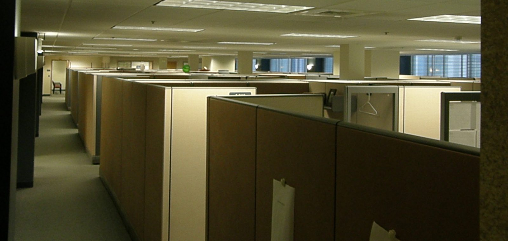
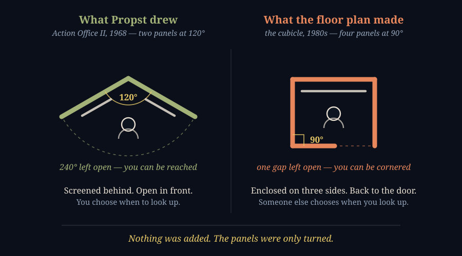
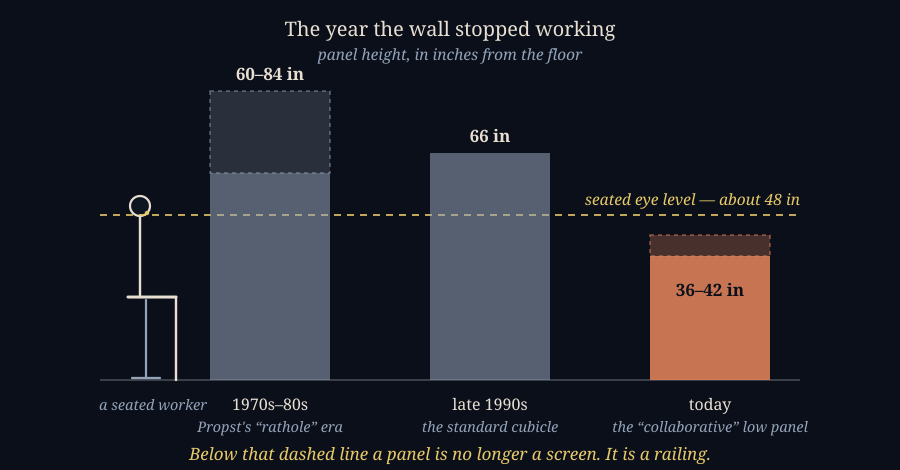

He Drew It at 120 Degrees. They Built It at 90.
SEPTEMBER 10, 2026

I worked for years in cubicles — several kinds, at several places, over a long enough stretch to watch the furniture itself change around me. The change I remember most clearly was the day they lowered the walls. It was not presented as a cost measure. It was presented as an improvement: more light, more openness, more of us able to see each other. What it actually did was take away the last thing that partition was doing for me, which was letting me decide when I was available. And I remember, later, the specific feeling of having an office with a door — not the status of it, the mechanics of it. A door is a switch. You can be reached or not reached, and you are the one who throws it.
So I went looking for who decided any of this, and found that the man usually blamed for the cubicle spent the last years of his life saying it was not what he drew. His name was Robert Propst, he died in 2000 with more than 120 patents to his name, and in 1997 he told the New York Times that "the cubicle-izing of people in modern corporations is monolithic insanity." He was talking about his own invention.
What Robert Propst Actually Designed — Action Office, 1964 and 1968
Propst ran the Herman Miller Research Corporation, and his interest was not furniture. It was what office work had become: people processing information all day in rooms built on the assumption that they were processing paper in rows. His 1968 book The Office: A Facility Based on Change is the argument in long form — that an office should be a thing a worker adjusts, rather than a thing a worker is assigned to.
The first attempt, Action Office I, shipped in 1964, designed by Propst under George Nelson's supervision. It was a suite of separate pieces at different heights for different jobs: a roll-top desk you could close on unfinished work and reopen the next morning exactly as you left it, a standing-height desk with a perch stool so you could work upright and seated in the same spot, a mobile station for meeting someone. It won the Alcoa Award. It also flopped — expensive, awkward to assemble — and Herman Miller discontinued it in 1970.
Action Office II, in 1968, was the rebuild that worked: the same idea expressed in modular, interchangeable components that a company could install itself and rearrange as it changed. Pushpin walls, so you could hang your own work where you could see it. Shelving at several levels. Surfaces for sitting and for standing. And a specific geometry — panels meeting at roughly 120 degrees, the honeycomb angle — which is the part everyone forgot and the part that mattered most.

Two panels at 120 degrees do not make a room. They make a screen — a back and a flank, with 240 degrees of the world still open in front of you. You cannot be surprised from behind, and you cannot be closed in. You still see the floor, and the floor still sees you, but on terms you set by which way you turn your chair. Propst called the effect peripheral discovery, and he was explicit that being reachable was the point: "Face to face involvement," he wrote, "is the premier communication tool." He was not designing a hiding place. He was designing an adjustable one.
George Nelson Saw What Would Happen in 1970 — Two Years In
The most uncomfortable fact I turned up is that nobody had to wait thirty years to find out how this ended. In 1970, two years after Action Office II shipped, George Nelson — the designer who had supervised the first version — wrote to Herman Miller's vice-president for corporate design, Robert Blaich, to disown it. The letter is quoted in most serious histories of the thing, and it is worth reading slowly:
"One does not have to be an especially perceptive critic to realize that AO-II is definitely not a system which produces an environment gratifying for people in general. But it is admirable for planners looking for ways of cramming in a maximum number of bodies, for employees (as against individuals), for personnel, corporate zombies, the walking dead, the silent majority."
That is not hindsight. That is a designer, in 1970, reading the customer's intentions off the customer's purchase orders and naming the outcome correctly a decade before it arrived. The system sold anyway. It became Herman Miller's most successful product, was renamed simply "Action Office" in 1978, and in 1985 the Worldesign Congress called it the most significant industrial design of the previous quarter century. By 1997, on Nikil Saval's count in Cubed: A Secret History of the Workplace — the standard history of all this, and the book most of what follows leans on — roughly forty million Americans were working in one.
"Monolithic Insanity" — What Propst Said, and When He Said It
Propst gave the interview that follows him around in 1997, three years before his death, and expanded on it in a 1998 Metropolis profile titled "The Man Behind the Cubicle," given when he was 77. The sentence everyone quotes is the short one — the cubicle-izing of people is monolithic insanity — but the fuller passage is more precise about where he thought the fault lay, and it is not with the parts:
"Not all organizations are intelligent and progressive. Lots are run by crass people. They make little, bitty cubicles and stuff people in them. Barren, rathole places."
The exact wording varies slightly between the sources that carry it, which is what happens to a quote that has been passed hand to hand for thirty years; the substance is consistent everywhere it appears. And notice what he is not saying. He is not saying his system was misunderstood, or badly manufactured, or cheaply copied. He is saying it was used correctly — by people whose purpose was different from his. His components did exactly what they were built to do. They were just pointed at a different objective.
This is the detail I keep turning over, because it is the part that generalizes. Nothing had to be added to Action Office to produce the cubicle farm. No corner was cut, no material downgraded. The panels were turned from 120 degrees to 90, closed on the fourth side, and repeated. A system designed to be configured by the person inside it was configured by the person buying it instead. That is the whole mechanism, and it took about ten years.
Why Cubicles Kept Shrinking: The Arithmetic That Ate the Design
The reason it went that direction rather than some other one is not a mystery, and it is the reason this entry is on a finance page rather than a design page. A floor plate has a rent per square foot. Headcount divided by square footage is a number a real-estate committee can put on a slide, defend in a budget meeting, and improve next year. Whether the person in the box finished the thought they were having is not a number anybody has.
So the measurable thing got optimized and the unmeasurable thing got spent, over and over, for fifty years. CoreNet Global's own membership surveys put the American average at about 225 square feet per employee in 2010 and about 151 by 2017 — a third of the space gone in seven years, in an industry that was not getting poorer. CoreNet's own forecast at the time was that many companies would be under 100.
I have seen the tax explanation offered for the 1980s acceleration — that office furniture depreciates over seven years while the building around it depreciates over decades, so a company that partitions with furniture rather than drywall writes the cost off far faster. The depreciation schedules are real and the asymmetry is real. I could not find a source I trust actually demonstrating it drove the cubicle boom rather than merely being compatible with it, so I am flagging it as a plausible mechanism I have not verified rather than repeating it as history.
When They Lowered the Walls
The second act is the one I lived through, and the industry's own numbers describe it plainly enough. Furniture dealers put 1970s and 1980s panels at roughly 60 to 84 inches; by the late 1990s the standard cubicle wall was 66 inches; the low panels sold today run about 36 to 42. These are trade-supplier figures rather than a survey, so treat them as the shape of a trend and not decimal points. The shape is not in dispute.
Now put a person next to them. A seated adult's eye sits somewhere around 47 to 50 inches off the floor. Every one of those historical panel heights is above that line. The current one is below it.

That crossing is the entire event. Above the line, a panel is a screen: someone who wants your attention has to stand up, walk around, and enter — three deliberate acts, each of which gives them a moment to decide it can wait. Below the line, you are visible from every desk on the floor, and the cost of interrupting you collapses to turning your head. The wall did not get shorter. It stopped being a wall.
And it was sold as a gift. That is the part that still irritates me. Nobody announced that the company had found a way to fit more of us on the floor and simultaneously make us cheaper to interrupt. We were told it was about collaboration, and about openness, and — this was the phrase — about being more accessible to each other.
Do Open Offices Actually Increase Collaboration? Somebody Measured
They do not, and the measurement is unusually clean. In 2018 Ethan Bernstein and Stephen Turban published "The impact of the 'open' workspace on human collaboration" in Philosophical Transactions of the Royal Society B. They took two Fortune 500 headquarters that were converting from partitioned workstations to open plan, and rather than surveying people about how collaborative they felt, they put sociometric badges on them and logged the actual interactions, before and after, in the same building with the same people.
Face-to-face interaction fell by roughly 70 percent. It did not redistribute; it went away. And the electronic traffic went up to fill the hole — emails sent rose 56 percent, emails received 20 percent, messages people were copied on 41 percent, instant messages 67 percent. Take away the ability to be unavailable and people do not become more open. They withdraw through the only door still available to them, which is the one with a mute button.
Two companies is two companies, and I would not build a theory of human nature on it. But it is a before-and-after inside the same organizations, using observed behavior rather than self-report, and it points the opposite way from the entire justification given for removing the walls.
What Interruption Actually Costs — And the Number That Is Folklore
Here I have to correct something I believed before writing this. The figure everyone cites is that it takes 23 minutes and 15 seconds to return to a task after an interruption. I have quoted it myself. It appears to come from Gloria Mark's remarks in a 2006 Gallup Management Journal interview rather than from any published paper — people have gone looking for the primary source and not found one. The number is not fabricated, but it is not a measurement you can go read either, and this publication's habit is to say which kind of number a number is.
The measurements that are in the literature are less quotable and, honestly, worse. In "No Task Left Behind? Examining the Nature of Fragmented Work", Mark and her colleagues shadowed 24 information workers for about 1,000 hours of observed work. People spent an average of roughly 11 minutes on a working sphere — a coherent chunk of one project — before switching, and 57 percent of those chunks were interrupted rather than finished. Not "took a while to recover." Interrupted, as the normal case, more often than not.
That is the resource the whole story is about, and it has never appeared on anyone's balance sheet. Rent per square foot has a line. Uninterrupted attention has no line, no owner, and no price, so in every trade-off between the two it loses by default — not because anyone decided it was worth less, but because one side of the comparison had a number and the other did not.
Is Any of This Still Relevant After COVID? The Third Act Says Yes
My first instinct was that the pandemic had settled this by accident — that four years of people working from rooms with actual doors would have made the case unanswerable. It did the opposite. What it settled was the argument about square footage, and square footage was never the part that mattered.
JLL's Global Occupancy Planning Benchmark for 2026 draws on 84 organizations and 716 million square feet of portfolio, which makes it about as good a read on corporate intent as exists. Two of its findings sit oddly together. First, presence is being mandated again: 62 percent of organizations now require a fixed number of in-office days, up from 49 percent a year earlier, and 55 percent of employees are in three to four days a week. Second, offices are still being measured by how full they are — global utilization runs at 56 percent against a target of 74, and the gap between them is being actively closed.
Put those together and you get the third act. The wall is gone. The assigned desk is going — seats are increasingly shared across more employees than there are chairs, so the surface you work at on Tuesday belongs to someone else on Wednesday. And attendance is compulsory again. You are required to be there, and there is nothing there that is yours.
Propst's system had you adjust your own space. The cubicle had someone else adjust it once and then leave it. Hot-desking removes the space from the question entirely: there is nothing to adjust, nothing to pin anything to, no back to put to a wall. Whatever you think of the box, the box had one property this doesn't — it was yours for the day, and you could arrange yourself inside it. The current arrangement is the first one in sixty years where the honest answer to "where do you sit?" is "wherever."
The Right Not to Be Interrupted
I have come to think this is best understood as a property question, which is why it belongs in a ledger rather than a design magazine.
Attention is the only input knowledge work actually runs on. A company that hires you for it buys some quantity of it, and reasonably expects to direct it. But there is a difference between directing someone's attention and holding the switch that decides when it can be broken — and over sixty years that switch has moved, quietly and without anyone ever negotiating it, from the worker to the floor plan. The 120-degree screen left it in your hands: turn your chair and you were available, turn it back and you weren't. The 90-degree box took the choice away in one direction and gave a false version of it in the other — you couldn't see out, but anyone could walk in behind you. The 42-inch panel removed the last of it. Shared seating removed the premises the question was asked about.
None of that was ever a policy. There was no memo, no negotiation, no point at which anyone said out loud that the right to close a door was being withdrawn. It went in the furniture. That is what makes Propst's word choice so exact: not cruelty, not malice — insanity. A system doing the opposite of its purpose while everyone involved behaves rationally within their own budget line. The real-estate committee was right about rent per square foot. The facilities manager was right about panel cost. Nobody was wrong, and the thing still came out inverted, because the one quantity that would have made the trade-off legible was the one nobody could put a figure on.
Propst spent his last years pointing at the gap and getting quoted for the insult rather than the diagnosis. Nelson had already put it in a letter in 1970 and been ignored while the product broke sales records. The evidence has been in for a while. It just keeps losing to arithmetic, which is usually what happens when only one side of a question has been given a number.
You can see roughly what he drew, in his own hand, at The Henry Ford, which holds his papers — the Action Office project drawing dated April 1, 1964, given to the museum by his family. And you have already seen what it became: it is at the top of this page, photographed by Dan4th Nicholas and shared on Wikimedia Commons under a CC BY 2.0 licence. Same parts. Different angle.